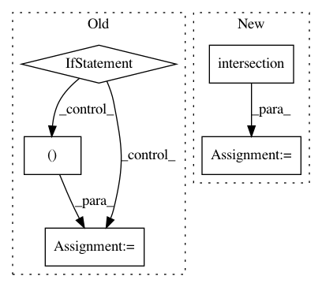

32479c73b83a9a875a28d1adce327573b39af37e,src/python/pants/commands/goal.py,Goal,setup_parser,#Goal#Any#Any#,233
Before Change
if not args:
args.append("goals")
if len(args) == 1 and args[0] in set(["-h", "--help", "help"]):
def format_usage(usages):
left_colwidth = 0
for left, right in usages:
left_colwidth = max(left_colwidth, len(left))
lines = []
for left, right in usages:
lines.append(" %s%s%s" % (left, " " * (left_colwidth - len(left) + 1), right))
return "\n".join(lines)
usages = [
("%prog goal goals ([spec]...)", Phase("goals").description),
("%prog goal help [goal] ([spec]...)", Phase("help").description),
("%prog goal [goal] [spec]...", "Attempt goal against one or more targets."),
("%prog goal [goal] ([goal]...) -- [spec]...", "Attempts all the specified goals."),
]
parser.set_usage("\n%s" % format_usage(usages))
parser.epilog = ("Either lists all installed goals, provides extra help for a goal or else "
"attempts to achieve the specified goal for the listed targets.")
parser.print_help()
// Add some text that we can"t put in the epilog, because that formats away newlines.
print(textwrap.dedent(
Note that target specs accept two special forms:
[dir]: to include all targets in the specified directory
[dir]:: to include all targets found recursively under the directory))
sys.exit(0)
else:
goals, specs = Goal.parse_args(args)
self.requested_goals = goals
with self.run_tracker.new_workunit(name="setup", labels=[WorkUnit.SETUP]):
// Bootstrap goals by loading any configured bootstrap BUILD files
with self.check_errors("The following bootstrap_buildfiles cannot be loaded:") as error:
with self.run_tracker.new_workunit(name="bootstrap", labels=[WorkUnit.SETUP]):
for path in self.config.getlist("goals", "bootstrap_buildfiles", default = []):
try:
buildfile = BuildFile(get_buildroot(), os.path.relpath(path, get_buildroot()))
ParseContext(buildfile).parse()
except (TypeError, ImportError, TaskError, GoalError):
error(path, include_traceback=True)
except (IOError, SyntaxError):
error(path)
// Now that we"ve parsed the bootstrap BUILD files, and know about the SCM system.
self.run_tracker.run_info.add_scm_info()
// Bootstrap user goals by loading any BUILD files implied by targets.
spec_parser = SpecParser(self.root_dir)
with self.check_errors("The following targets could not be loaded:") as error:
with self.run_tracker.new_workunit(name="parse", labels=[WorkUnit.SETUP]):
for spec in specs:
try:
for target, address in spec_parser.parse(spec):
if target:
self.targets.append(target)
// Force early BUILD file loading if this target is an alias that expands
// to others.
unused = list(target.resolve())
else:
siblings = Target.get_all_addresses(address.buildfile)
prompt = "did you mean" if len(siblings) == 1 else "maybe you meant one of these"
error("%s => %s?:\n %s" % (address, prompt,
"\n ".join(str(a) for a in siblings)))
except (TypeError, ImportError, TaskError, GoalError):
error(spec, include_traceback=True)
except (IOError, SyntaxError, TargetDefinitionException):
error(spec)
self.phases = [Phase(goal) for goal in goals]
rcfiles = self.config.getdefault("rcfiles", type=list,
default=["/etc/pantsrc", "~/.pants.rc"])
if rcfiles:
rcfile = RcFile(rcfiles, default_prepend=False, process_default=True)
// Break down the goals specified on the command line to the full set that will be run so we
// can apply default flags to inner goal nodes. Also break down goals by Task subclass and
// register the task class hierarchy fully qualified names so we can apply defaults to
// baseclasses.
sections = OrderedSet()
for phase in Engine.execution_order(self.phases):
for goal in phase.goals():
sections.add(goal.name)
for clazz in goal.task_type.mro():
if clazz == Task:
break
sections.add("%s.%s" % (clazz.__module__, clazz.__name__))
augmented_args = rcfile.apply_defaults(sections, args)
if augmented_args != args:
del args[:]
args.extend(augmented_args)
sys.stderr.write("(using pantsrc expansion: pants goal %s)\n" % " ".join(augmented_args))
Phase.setup_parser(parser, args, self.phases)
def run(self, lock):
// TODO(John Sirois): Consider moving to straight python logging. The divide between the
// context/work-unit logging and standard python logging doesn"t buy us anything.
After Change
args.append("help")
help_flags = set(["-h", "--help", "help"])
show_help = len(help_flags.intersection(args)) > 0
args = filter(lambda f: f not in help_flags, args)
goals, specs = Goal.parse_args(args)
if show_help:
In pattern: SUPERPATTERN
Frequency: 3
Non-data size: 5
Instances
Project Name: pantsbuild/pants
Commit Name: 32479c73b83a9a875a28d1adce327573b39af37e
Time: 2014-04-30
Author: benjy@foursquare.com
File Name: src/python/pants/commands/goal.py
Class Name: Goal
Method Name: setup_parser
Project Name: IDSIA/sacred
Commit Name: 047eb9dd373ca0d59251a1b6cdb80f8817786eb8
Time: 2014-07-14
Author: klaus@idsia.ch
File Name: sacred/custom_containers.py
Class Name: DogmaticDict
Method Name: __init__
Project Name: pantsbuild/pants
Commit Name: 52c7c260e7c0a85e6b051af48b46e8fe9493b117
Time: 2020-08-04
Author: benjyw@gmail.com
File Name: src/python/pants/core/util_rules/determine_source_files.py
Class Name:
Method Name: determine_specified_source_files